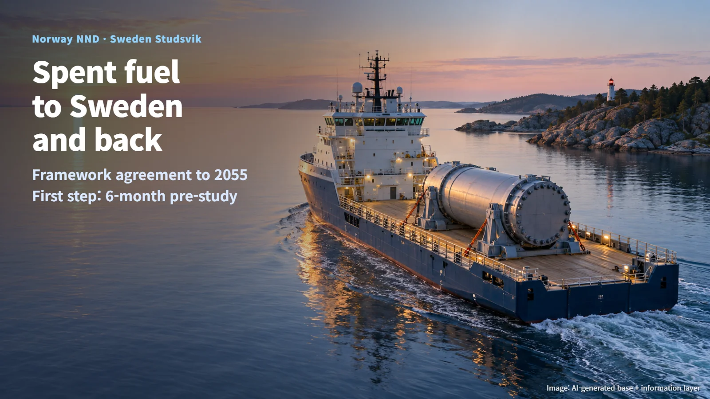
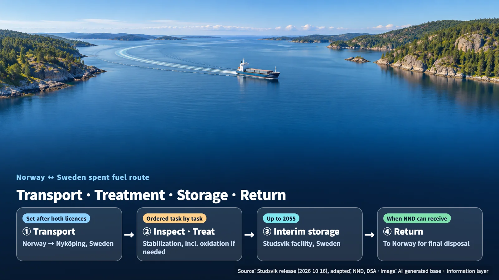
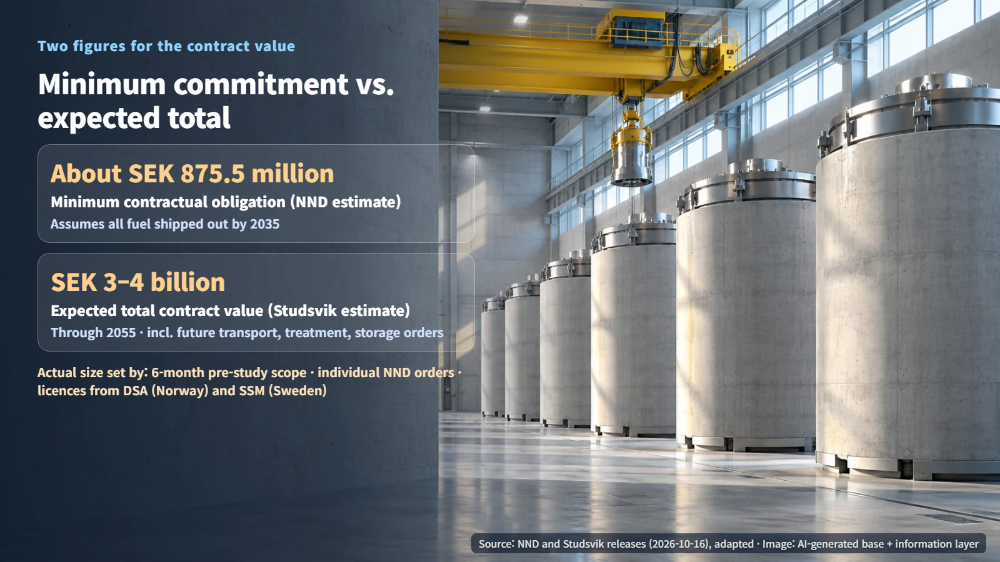

Norway · Sweden · Spent Fuel
Why Norway Is Sending Its Spent Fuel to Sweden, Only to Take It Back
Under a framework agreement to 2055, Norway's research reactor fuel will be treated and stored at Studsvik in Sweden, then returned to Norway for final disposal.
When a country announces that it will ship spent fuel (the nuclear fuel left over after use in a reactor) abroad, the natural questions follow: where does it go, how is it handled there, and who is responsible for it in the end? The spent fuel management agreement announced on October 16, 2026 by Sweden's Studsvik and Norwegian Nuclear Decommissioning (NND) gives concrete answers. The fuel will be treated and stored in Sweden, then returned to Norway for final disposal.

16.5 Tonnes of Research Reactor Fuel Left in Norway
Norway's research facilities still hold about 16.5 tonnes of spent fuel in various forms. It comes from Halden and Kjeller, the sites of Norway's research reactors, which were used for experiments and studies.
Studsvik describes this material as legacy research spent fuel that includes metallic uranium and aluminium cladding (the outer shell that encloses the fuel). Metallic uranium tends to be more chemically reactive than uranium oxide, so long-term storage may require treatment to stabilize it.
The two parties describe the scope slightly differently. NND explained that the agreement covers the fuel currently stored at Halden, and noted that some of the Kjeller fuel is already covered by an existing contract. Studsvik presented the deal as management of research reactor fuel from Halden and Kjeller, and also referred to the 2021 contract it signed with IFE to treat the Kjeller JEEP I metallic uranium fuel. The actual quantities, fuel types and acceptance units for each contract will be defined in the upcoming pre-study and work orders. Confirming the inventory and condition of every fuel item in the Halden storage facility is the starting point of this agreement.
Four Steps: Transport, Treatment, Interim Storage and Return
The route the fuel will follow can be summarized in four steps.
1. Transport: The fuel moves from Norway to Studsvik's facility in Nyköping, Sweden. 2. Treatment: After loading, receipt and inspection, the fuel is stabilized and treated, including oxidation where needed. Oxidation is a process that converts reactive metallic uranium into a more stable oxide form. 3. Interim storage: The treated material is held in interim storage in Sweden, with 2055 as the upper limit for the storage period. 4. Return: The material goes back to Norway for final disposal.
At the heart of this route is the Nyköping facility, where the fuel is received, inspected, stabilized and then placed in storage. The main work is expected to take place over roughly the next 20 years.

NND is also procuring storage casks separately. It has selected NAC as the cask supplier, with a system made up of steel inner canisters, concrete silos and dedicated transport flasks, and it envisions 3 to 5 silos for the entire inventory. Delivery is expected in 2032 at the earliest. According to NND's September 29 announcement, the contract is to be signed once the statutory standstill period for objections has passed.
From About SEK 0.88 Billion to SEK 4 Billion: How the Contract Works
The agreement is a framework agreement running to 2055, meaning a contract that sets the overall terms of the services.
It begins with a pre-study of up to six months that will set the schedule and budget; once the pre-study is complete, the physical transport schedule will be fixed. The contract includes an annual fixed fee covering project management, regulatory work, security and the reservation of storage capacity. Individual tasks such as transport, treatment and storage will be ordered one by one, after NND reviews need, progress, regulatory status and cost. NND picks the services it needs and orders them when it needs them.
The value of the deal comes in two figures. NND estimates its minimum contractual obligation at about SEK 875.5 million (Swedish kronor), assuming all fuel is shipped out by 2035 (Studsvik rounded this to about SEK 875 million in its announcement). Studsvik estimates the expected total contract value through 2055 at SEK 3 billion to 4 billion, including future orders for transport, treatment and storage. The actual size will be set by the scope of the pre-study, the individual orders and the licences from both countries.

The right to terminate rests with NND. It can end the agreement with 12 months' notice after the pre-study, or with 18 months' notice once the contract has been in force for five years; during the 12-month notice period, the fixed fee and minimum volumes continue to apply. According to NND, Studsvik is bound to the contract through 2055, which makes the structure asymmetric. Studsvik explains that if NND exercises its termination right, only part of the minimum commitment may be realized.
The Licences Both Countries Must Grant Before Fuel Crosses the Border
The timing of the physical shipments will depend on the results of the pre-study and on licences from both countries.
Under Guide 16 of the Norwegian Radiation and Nuclear Safety Authority (DSA), exporting spent fuel requires an export licence, and the exporter is responsible for the entire shipment until the fuel is received at its destination. That responsibility stays with the exporter regardless of any contract. Nuclear material may be subject to additional requirements, such as an export licence from the Ministry of Foreign Affairs and licences for possession, trade and transport.
The Swedish Radiation Safety Authority (SSM) requires two separate approvals: a prior authorization for the cross-border shipment and a licence for the activity under the Nuclear Activities Act and the Radiation Protection Act. Spent fuel applications use Standard Document B, and imports from countries outside the EU require a return guarantee (an assurance that the material can be sent back if necessary). According to SSM guidance, a general activity licence typically takes 1 to 6 months to review, and a correctly completed standard document application takes 90 to 120 days to reach a decision. The transport schedule for this project will be set to match the outcome of each licence.
The return terms require Norway to be ready. The contract includes a right and an obligation to demand return if environmentally sound handling becomes impossible, and it provides that the material is returned when NND is able to receive it. DSA guidance explains that the obligation to take material back can arise whether or not Norway's storage and disposal facilities are in operation, so a take-back plan with domestic licences and capacity must be in place at the time of export. From the moment the fuel leaves, Norway must be prepared to receive it back at any time.
Managing spent fuel across borders is a long commitment, with licences and responsible parties defined at every stage. This agreement will be carried out step by step, with the first schedule taking shape in the six-month pre-study, on the principle that the fuel comes back to Norway for final disposal.